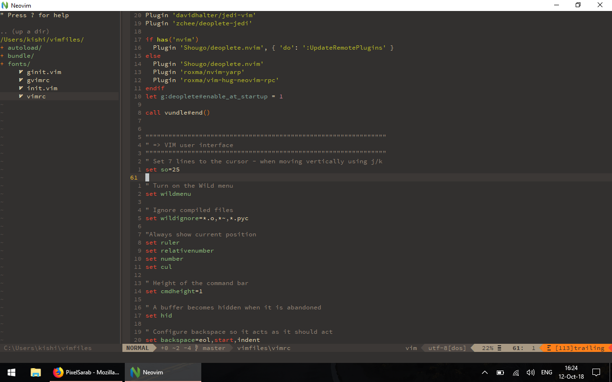

Vimming
Oct 11, 2018

Having a passion for code, I always search for the best tools I can use to optimise my workflow, and overall enjoyment of coding.
Havig a good editor, with a nice colorscheme, and a nice font, will make the experience of coding even more fun than the problem solving that is inherited by code.
I checked out all sorts of IDEs and text editors, I enjoyed some, I had hard time with others, like PyCharm and Emacs respectively, Emacs is amazing but the learning curve is very steep for me, and I don’t have that much time to learn the intriquecies of an OS of a text editor.
In the end, I found VIM, I fell in love with its flexibility, it was weird at first, but fun. It was fun to create the .vimrc file and installing helpfull plug-ins.